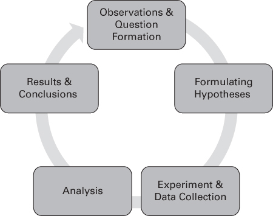
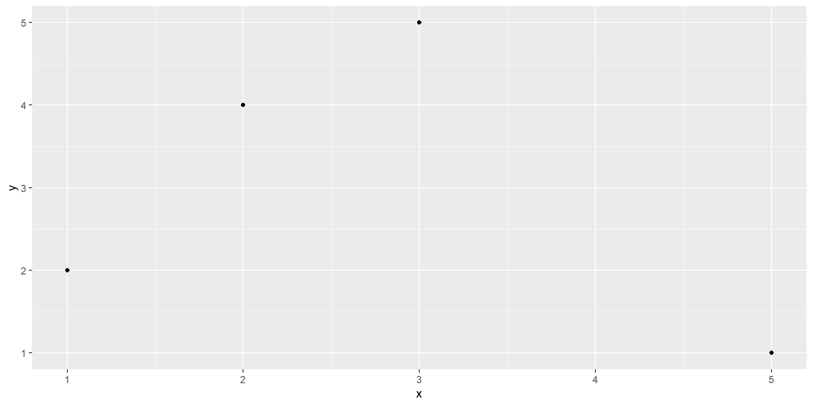

[1] 1 2 3[1] "A" "B" "C"Lecture 1
RThe field of statistics has grown in recent years primarily due to the datafication of the world.
Important
98% of all stored information is digital. Collected data is increasing even at this very moment.
Statistics
Statistics is a field of study concerned with:
Data \(\to\) Numbers \(\to\) Information \(\to\) Investigation \(\to\) Communication
How is statistical thinking different from mathematical thinking?
Statistical Thinking
Statistical thinking involves understanding and analyzing data while accounting for uncertainty!
Flip a coin 10 times. If you don’t have a coin, search “coin flip” on Google.
Note
How many times did you get heads? Do you think the coin you flipped was fair?
Biostatistics involves applying statistical concepts to data from the biological sciences, health sciences, and medicine.
Data science is the study of how to extract useful information from data using quantitative methods and theories from many fields. The field focuses on large data sets that were not originally designed or collected to address the question of interest.
Available data usually come from the following sources:
Descriptive statistics are used to describe properties of complex sets of numbers. Summary statistics are a good example of descriptive statistics.
Inferential statistics are used to infer information from a smaller group (sample) to a more general group (population).
Random variables have values obtained arise as a result of chance factors, so that they cannot be exactly predicted in advance. Values of random variables resulting from measurement procedures are referred to as observations/measurements.
Note
Random variables could be classified as qualitative or quantitative.
Quantitative variables are variables that can be measured or characterized with a numerical value.
Discrete Random Variables
A discrete variable is characterized by gaps or interruptions in the values that it can assume.
Example: Customer counts at Cafe Rio, Number of missing teeth, Likert Scale scores
Continuous Random Variables
A continuous variable is characterized by gaps or interruptions in the values that it can assume.
Example: Speed, Weight, Time
Qualitative variables cannot be measured numerically, but can be described categorically. Discrete and qualitative variables are also known as categorical variables.
As the name implies, nominal data consist of “naming” observations or classifying them into various mutually exclusive and collectively exhaustive categories.
Examples: Assigned sex at birth (male,female); HHS Regions (HHS Regions 1-10)
Important
Nominal data are typically qualitative in nature and does not account for any ordering in variable levels.
Ordinal data are for variables with values with inherent ordering.
Examples: Shirt size (Small, Medium, Large, XL); Socioeconomic status (Low, Medium, High)
Important
Ordinal data can include discrete variables and some qualitative variables.
Interval data includes measurements that can be ordered and a distance metric can be defined between two measurements. Interval scales have equal intervals between values with arbitrary zero points.
Examples: Temperature, IQ
Ratio data is similar to interval data, but with an absolute zero measurement defined as the “absence” of the variable being measured.
Examples: Weight, Height
Identify the type of data/variable for the following:
Population
A population is the largest collection of entities for which we have an interest at a particular time. Measurements of some variable from these entities would generate a population of values for that variable.
An exact value calculated from a population is referred to as a parameter.
Sample
A sample is a part of the population.
An exact value calculated from a sample is referred to as a statistic.
Sampling can be grouped into two broad categories: probability-based/random sampling and convenience sampling.
A sample is a random sample when the probability with which every respondent was sampled is known. These probabilities are not necessarily equal. Types of random sampling include:
A sample is a convenience sample when the respondents are selected based on ease of access or availability. This could be a potential source of bias.
The scientific method is a process by which scientific information is collected, analyzed, and reported in order to produce unbiased and replicable results in an effort to provide an accurate representation of observable phenomena.

RYou can install R and RStudio on your personal computers and laptops by following the instructions on this page: https://posit.co/download/rstudio-desktop/
RStudio is currently installed on the classroom computers.
R to perform an act by giving it commands through source code.R commands are enteredImportant
There are different types of programming data types such as integers, doubles/numerics, logicals, and characters.
TRUE or FALSEVectors are a series of values. These can be created using the c() function, known as the combine/concatenate function.
You can store different data types to variables using the <- sign.
Categorical data are commonly represented in R as factors.
[1] 18-39 40-59 60+
Levels: 18-39 40-59 60+[1] "Disagree" "Strongly Disagree" "Agree"
[4] "Neutral" "Strongly Agree" [1] Disagree Strongly Disagree Agree Neutral
[5] Strongly Agree
Levels: Strongly Disagree Disagree Neutral Agree Strongly AgreeData frames are rectangular spreadsheets. Data are typically imported as data frames.
Note
Rows correspond to observations and the columns correspond to variables.
Example:
mpg cyl disp hp drat wt qsec vs am gear carb
Mazda RX4 21.0 6 160 110 3.90 2.620 16.46 0 1 4 4
Mazda RX4 Wag 21.0 6 160 110 3.90 2.875 17.02 0 1 4 4
Datsun 710 22.8 4 108 93 3.85 2.320 18.61 1 1 4 1
Hornet 4 Drive 21.4 6 258 110 3.08 3.215 19.44 1 0 3 1
Hornet Sportabout 18.7 8 360 175 3.15 3.440 17.02 0 0 3 2
Valiant 18.1 6 225 105 2.76 3.460 20.22 1 0 3 1You can test for mathematical relations such as equality/inequality, resulting in a TRUE or FALSE value.
Functions are commands in R. c() is a function that combines different values. You can create a function or use functions built for R.
Example: seq() is a function that generates a sequence of numbers. The resulting sequence of numbers can be changed by changing the attributes of the function
[1] 1 2 3 4 5[1] 1 3 5 [1] 1.000000 1.444444 1.888889 2.333333 2.777778 3.222222 3.666667 4.111111
[9] 4.555556 5.000000To learn more about what a specific R function does, type ?function_name in the console. (Ex:?seq, ?c)
When you input a legitimate error, R will warn you using a sentence starting with “Error in” and includes a sentence explaining what went wrong.
Error in add(1, 2, 3): could not find function "add"Error in c("A", "B") + 1: non-numeric argument to binary operatorNote
If the text starts with “Error”, figure out what’s causing it. Think of errors as a red traffic light: stop and assess for anything wrong in the code (missing parenthesis, adding characters to numbers, non-existent functions, etc.)
Important
Encountering errors in your code is normal even for an experienced coder. Don’t be afraid to review your code if you made an error! This process is called “debuggging”.
When R produces a warning, your code will still be implemented albeit with some caveats.
for_plotting <- data.frame(x=c(1,2,3,4,5), y=c(2,4,5,NA,1))
library(ggplot2)
ggplot(data=for_plotting,aes(x=x,y=y)) + geom_point()
The plot is displayed, but a warning was raised regarding a missing value. Note that the data frame for_plotting has a missing value for y denoted by NA.
R packagesR packages extend the functionality of R by providing additional functions, data, and documentation. These packages are written by R users around the world and can be downloaded for free!
Note
Think of R as a new phone. R packages are apps that you can download to use your phone in many different ways.
R PackagesLike apps on a phone, R packages also need to be installed. These packages can be installed by running the following code snippet install.packages("PackageName"). For example, to install the package tidyverse used for data manipulation and cleaning, you can run the following code:
To load this package in R, you can use the following syntax:
Important
You must have an active internet connection to install R packages to your device.
The nycflights23 package includes some data sets saved as data frames. These data sets are related to all domestic flights departing from one of New York City’s three main airports in 2023: Newark Liberty International (EWR), John F. Kennedy International (JFK), and LaGuardia Airport (LGA).
One of the data sets in this package is the flights data set.
# A tibble: 435,352 × 19
year month day dep_time sched_dep_time dep_delay arr_time sched_arr_time
<int> <int> <int> <int> <int> <dbl> <int> <int>
1 2023 1 1 1 2038 203 328 3
2 2023 1 1 18 2300 78 228 135
3 2023 1 1 31 2344 47 500 426
4 2023 1 1 33 2140 173 238 2352
5 2023 1 1 36 2048 228 223 2252
6 2023 1 1 503 500 3 808 815
7 2023 1 1 520 510 10 948 949
8 2023 1 1 524 530 -6 645 710
9 2023 1 1 537 520 17 926 818
10 2023 1 1 547 545 2 845 852
# ℹ 435,342 more rows
# ℹ 11 more variables: arr_delay <dbl>, carrier <chr>, flight <int>,
# tailnum <chr>, origin <chr>, dest <chr>, air_time <dbl>, distance <dbl>,
# hour <dbl>, minute <dbl>, time_hour <dttm>Note
A tibble is a special type of data frame! The dimensions show the number of rows x number of columns. Each row corresponds to an observation, while each column corresponds to the variables describing each observation.
flights data set.You can use the following functions to explore a data set.
View() brings up RStudio’s built in data viewer. That is, if you want to view data like an Excel sheet.
The glimpse() function from the package dplyr (part of tidyverse) provides us with a different view of the data set. It includes the data type of each variable defined by the columns of the data frame.
Rows: 435,352
Columns: 19
$ year <int> 2023, 2023, 2023, 2023, 2023, 2023, 2023, 2023, 2023, 2…
$ month <int> 1, 1, 1, 1, 1, 1, 1, 1, 1, 1, 1, 1, 1, 1, 1, 1, 1, 1, 1…
$ day <int> 1, 1, 1, 1, 1, 1, 1, 1, 1, 1, 1, 1, 1, 1, 1, 1, 1, 1, 1…
$ dep_time <int> 1, 18, 31, 33, 36, 503, 520, 524, 537, 547, 549, 551, 5…
$ sched_dep_time <int> 2038, 2300, 2344, 2140, 2048, 500, 510, 530, 520, 545, …
$ dep_delay <dbl> 203, 78, 47, 173, 228, 3, 10, -6, 17, 2, -10, -9, -7, -…
$ arr_time <int> 328, 228, 500, 238, 223, 808, 948, 645, 926, 845, 905, …
$ sched_arr_time <int> 3, 135, 426, 2352, 2252, 815, 949, 710, 818, 852, 901, …
$ arr_delay <dbl> 205, 53, 34, 166, 211, -7, -1, -25, 68, -7, 4, -13, -14…
$ carrier <chr> "UA", "DL", "B6", "B6", "UA", "AA", "B6", "AA", "UA", "…
$ flight <int> 628, 393, 371, 1053, 219, 499, 996, 981, 206, 225, 800,…
$ tailnum <chr> "N25201", "N830DN", "N807JB", "N265JB", "N17730", "N925…
$ origin <chr> "EWR", "JFK", "JFK", "JFK", "EWR", "EWR", "JFK", "EWR",…
$ dest <chr> "SMF", "ATL", "BQN", "CHS", "DTW", "MIA", "BQN", "ORD",…
$ air_time <dbl> 367, 108, 190, 108, 80, 154, 192, 119, 258, 157, 164, 1…
$ distance <dbl> 2500, 760, 1576, 636, 488, 1085, 1576, 719, 1400, 1065,…
$ hour <dbl> 20, 23, 23, 21, 20, 5, 5, 5, 5, 5, 5, 6, 5, 6, 6, 6, 6,…
$ minute <dbl> 38, 0, 44, 40, 48, 0, 10, 30, 20, 45, 59, 0, 59, 0, 0, …
$ time_hour <dttm> 2023-01-01 20:00:00, 2023-01-01 23:00:00, 2023-01-01 2…The kable() function is part of the package knitr. In this example, we will use another data set in the nycflights23 package: the airlines data set.
| carrier | name |
|---|---|
| 9E | Endeavor Air Inc. |
| AA | American Airlines Inc. |
| AS | Alaska Airlines Inc. |
| B6 | JetBlue Airways |
| DL | Delta Air Lines Inc. |
| F9 | Frontier Airlines Inc. |
| G4 | Allegiant Air |
| HA | Hawaiian Airlines Inc. |
| MQ | Envoy Air |
| NK | Spirit Air Lines |
| OO | SkyWest Airlines Inc. |
| UA | United Air Lines Inc. |
| WN | Southwest Airlines Co. |
| YX | Republic Airline |
The $ operator allows us to extract and then explore a single variable within a data frame.
[1] "Endeavor Air Inc." "American Airlines Inc." "Alaska Airlines Inc."
[4] "JetBlue Airways" "Delta Air Lines Inc." "Frontier Airlines Inc."
[7] "Allegiant Air" "Hawaiian Airlines Inc." "Envoy Air"
[10] "Spirit Air Lines" "SkyWest Airlines Inc." "United Air Lines Inc."
[13] "Southwest Airlines Co." "Republic Airline" Can you provide me with two qualitative variables and two quantitative variables in the dataset planes in the nycflights23 package?
Rows: 4,840
Columns: 9
$ tailnum <chr> "N101DQ", "N101DU", "N101HQ", "N101NN", "N102DN", "N102DU…
$ year <int> 2020, 2018, 2007, 2013, 2020, NA, 2007, 2013, 1998, NA, 2…
$ type <chr> "Fixed wing multi engine", "Fixed wing multi engine", "Fi…
$ manufacturer <chr> "AIRBUS", "C SERIES AIRCRAFT LTD PTNRSP", "EMBRAER-EMPRES…
$ model <chr> "A321-211", "BD-500-1A10", "ERJ 170-200 LR", "A321-231", …
$ engines <int> 2, 2, 2, 2, 2, 2, 2, 2, 2, 2, 2, 2, 2, 2, 2, 2, 2, 2, 2, …
$ seats <int> 199, 133, 80, 379, 199, 133, 80, 379, 182, 133, 199, 80, …
$ speed <int> 0, 0, 0, 0, 0, 0, 0, 0, 0, 0, 0, 0, 0, 0, 0, 0, 0, 0, 0, …
$ engine <chr> "Turbo-fan", "Turbo-fan", "Turbo-fan", "Turbo-fan", "Turb…Columns made up of characters are categorical variables. Quantitative variables are those marked as integers.
Important
NA means that the data point is missing. This is not the same as “NA”, which is a character.
Explore the data set iris.
iris have?iris have?glimpse() to determine the type of data of each column of iris.$ operator to extract the species variable in irisRows: 150
Columns: 5
$ Sepal.Length <dbl> 5.1, 4.9, 4.7, 4.6, 5.0, 5.4, 4.6, 5.0, 4.4, 4.9, 5.4, 4.…
$ Sepal.Width <dbl> 3.5, 3.0, 3.2, 3.1, 3.6, 3.9, 3.4, 3.4, 2.9, 3.1, 3.7, 3.…
$ Petal.Length <dbl> 1.4, 1.4, 1.3, 1.5, 1.4, 1.7, 1.4, 1.5, 1.4, 1.5, 1.5, 1.…
$ Petal.Width <dbl> 0.2, 0.2, 0.2, 0.2, 0.2, 0.4, 0.3, 0.2, 0.2, 0.1, 0.2, 0.…
$ Species <fct> setosa, setosa, setosa, setosa, setosa, setosa, setosa, s… [1] setosa setosa setosa setosa setosa setosa
[7] setosa setosa setosa setosa setosa setosa
[13] setosa setosa setosa setosa setosa setosa
[19] setosa setosa setosa setosa setosa setosa
[25] setosa setosa setosa setosa setosa setosa
[31] setosa setosa setosa setosa setosa setosa
[37] setosa setosa setosa setosa setosa setosa
[43] setosa setosa setosa setosa setosa setosa
[49] setosa setosa versicolor versicolor versicolor versicolor
[55] versicolor versicolor versicolor versicolor versicolor versicolor
[61] versicolor versicolor versicolor versicolor versicolor versicolor
[67] versicolor versicolor versicolor versicolor versicolor versicolor
[73] versicolor versicolor versicolor versicolor versicolor versicolor
[79] versicolor versicolor versicolor versicolor versicolor versicolor
[85] versicolor versicolor versicolor versicolor versicolor versicolor
[91] versicolor versicolor versicolor versicolor versicolor versicolor
[97] versicolor versicolor versicolor versicolor virginica virginica
[103] virginica virginica virginica virginica virginica virginica
[109] virginica virginica virginica virginica virginica virginica
[115] virginica virginica virginica virginica virginica virginica
[121] virginica virginica virginica virginica virginica virginica
[127] virginica virginica virginica virginica virginica virginica
[133] virginica virginica virginica virginica virginica virginica
[139] virginica virginica virginica virginica virginica virginica
[145] virginica virginica virginica virginica virginica virginica
Levels: setosa versicolor virginicairis has 150 observations and 5 variables: Sepal Length, Sepal Width, Petal Length, Petal Width, and Species. Species is a factor, while all the other variables are numeric (dbl) in nature.
RWe will be using R to work with data and perform statistical analysis. We will also explore how to use R to explore and describe data from external sources (.csv files).
Lecture 1 - Back to home